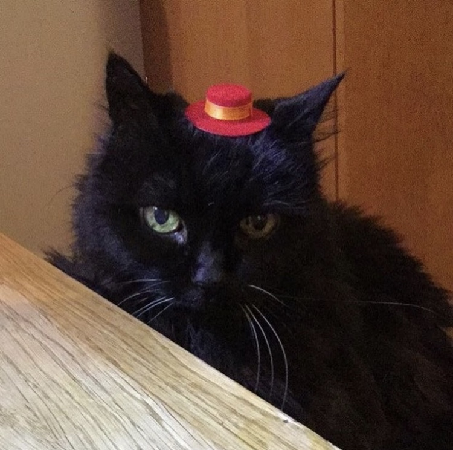

Hej!
Jag heter Tyra Olofsson och jag är 16 år gammal. Jag går i teknik-klassen på Amerikanska Gymnasiet
och
jag tycker verkligen om skolan än så länge. Jag valde att söka till teknikprogrammet eftersom att det verkade både roligt och intressant att lära sig om teknik eftersom att den utvecklas hela tiden. Mina favoritämnen i skolan är matematik, engelska, webbutveckling och dator-nätverksteknik.
Jag tycker att jag har lärt mig mycket i både webbutveckling och dator-nätverkstekniken. Jag kunde ingenting alls när jag började skolan, men nu tycker jag att allting går bra och jag vet hur saker fungerar nu.
På fritiden så gör jag inte mycket, men ibland tittar jag på film, är ute med kompisar eller åker skateboard.
Jag åker ofta skateboard till skolan när det är fint väder, jag är ganska duktig på detta.
Jag brukar inte åka i ramp eftersom att det är väldigt svårt och jag orkar inte lära mig, jag kan dock åka lite.
Min bästa vän är min katt Salma, här är en bild på henne:

Detta är en av mina tre skateboards: